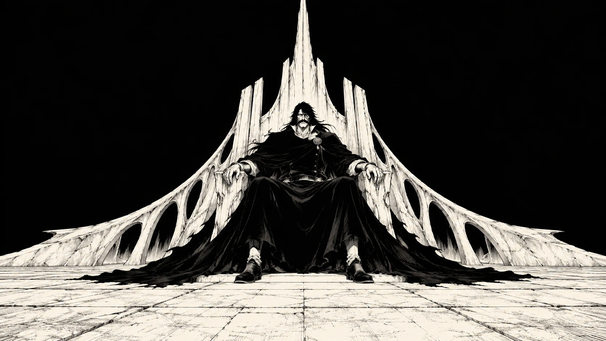

THE NEWANIME
AGE OFSTUDIO
独創的なアニメーションINSTINCT. INK. IMPACT.

AGE OFSTUDIO
Some things you feel before you can explain them. A look. A cut. A frame that stays with you.
We bring that instinct to life. Anime-rooted storytelling, bold visual worlds, and motion with something to say. From the first line to the last frame.
WHAT WE DO ↘THREE WORLDS. ONE INSTINCT.
ENTER A FRAME TO EXPLORE.
BLEACH — A FAN-MADE VISUAL EXPLORATION ILLUSTRATION × DESIGN × MOTION
A rough idea. A wild ambition.
That’s all it takes to start.